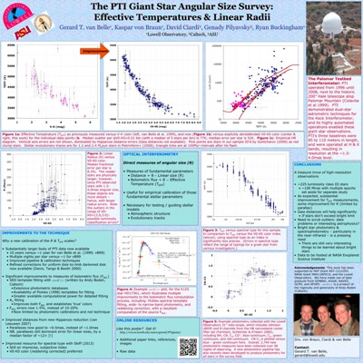

The PTI Giant Star Angular Size Survey:
Effective Temperatures & Linear Radii
Gerard T. van Belle1, Kaspar von Braun1, David Ciardi2, Genady Pilyavsky3, Ryan Buckingham1
1Lowell Observatory, Flagstaff AZ; 2Caltech, Pasadena, CA; 3Arizona State University
AAS229
Dallas, Texas
January 3-7, 2017

Full-size JPG
PDF
Links of interest
Lead author: Gerard van Belle
Institutions: